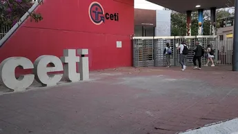
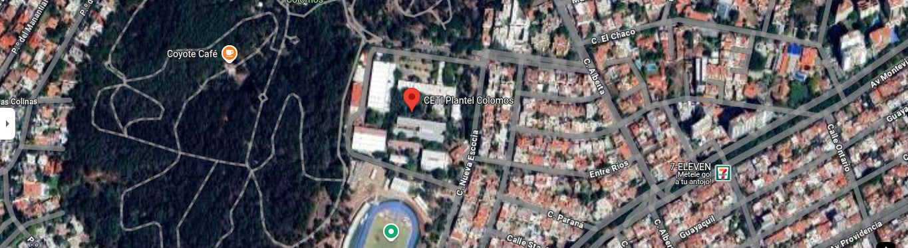

Ceti Colomos
El Centro de Enseñanza Técnica Industrial (CETI), o CETI , es una institución educativa pública, descentralizada y federal en Guadalajara , en el estado de Jalisco , México , que promueve la investigación y ofrece servicios tecnológicos en áreas relacionadas con el desarrollo del sector industrial en la región Occidente de México. A partir de 2025, ofrece varias licenciaturas posteriores a la preparatoria, en el llamado nivel Tecnólogo , y varias licenciaturas a nivel de ingeniería (con especializaciones)
Donde se encuentra
La ubicación del CETI Colomos es: Nueva Escocia No. 1885, Colonia Providencia 5a Sección, C.P. 44638, Guadalajara, Jalisco
Oferta Academica
Carreras de Tecnólogo (equivalente Educación Media Superior)
Desde sus inicios el CETI se destaca por su modelo educativo especializado en el ámbito del desarrollo de la tecnología, por lo que en primera instancia a sus egresados se les dio el título de “Técnico” y luego, debido a su avanzado programa de estudios en comparación con otras preparatorias técnicas, se optó por cambiar el título a “Tecnólogo”, un profesional que conoce de la técnica a tal grado que es capaz de perfeccionar y ampliar su campo de aplicación.
Impartidas en Plantel Colomos
- Tecnólogo en Control
- Automático e Instrumentación
- Tecnólogo en Construcción
- Tecnólogo en Electromecánica
- Tecnólogo en Electrónica y Comunicaciones
- Tecnólogo en Desarrollo de Software
- Tecnólogo en Mecánica Automotriz
- Tecnólogo en Máquinas - Herramienta
- Tecnólogo Químico en Fármacos
Carreras de Ingeniería (Educación Superior)
Cuenta con cuatro carreras universitarias que son las de mayor auge en nuestro país